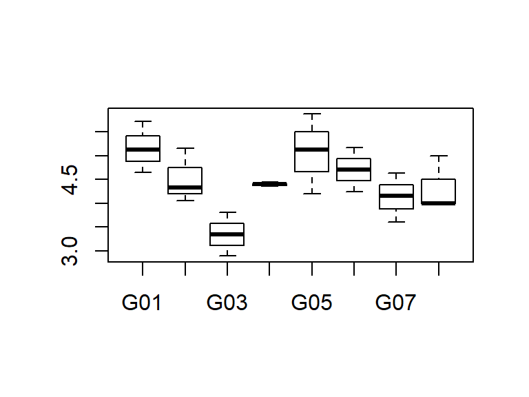
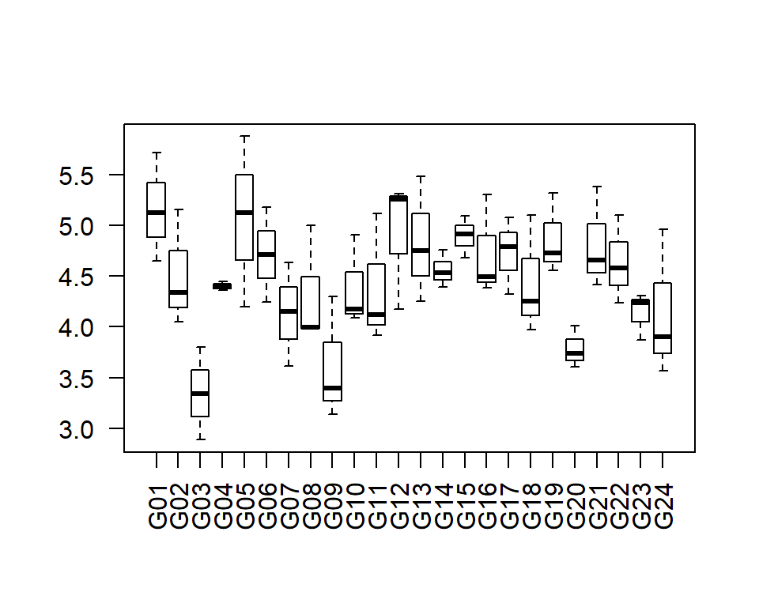
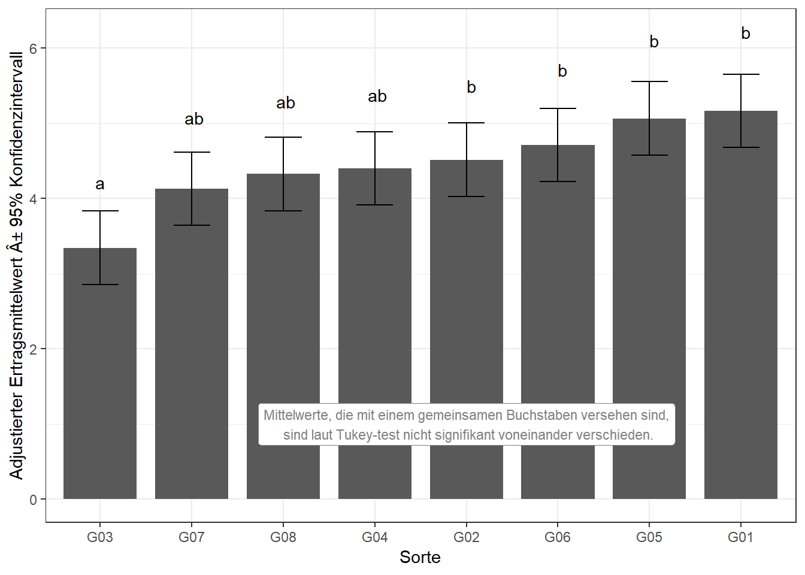

library(data.table) # bessere Datenmanipulation
library(ggplot2); library(ggfortify) # bessere plots
library(emmeans) # adjustierte MittelwerteDieses Beispiel ist dem Beispiel “1wayANOVA_crd” sehr ähnlich und baut darauf auf. Zunächst importieren wir den Beispieldatensatz john.alpha aus dem agridat package und formatieren es als data.table Objekt.
library(agridat) # agrarwissenschaftliche Beispieldatensätze
rcbd <- data.table(john.alpha)Auch in diesem Beispiel werden wir zumindest teilweise ignorieren wie das Experiment eigentlich angelegt war (i.e. \(\alpha\)-lattice) und werten es stattdessen aus, als wäre es eine randomisierte vollständige Blockanlage (=Randomized Complete Block Design) gewesen. Demnach können wir die Spalten mit den Informationen zum eigentlichen Versuchsdesign teilweise entfernen. Behalten müssen wir die Design-Spalte, die die Informationen zu den vollständigen Blöcken enthält. Diese heißt hier “rep” (replicate), da vollständige Blöcke auch oft Wiederholungen genannt werden. Desweiteren nehmen wir diesmal an, dass nur 8 Sorten getestet wurden, damit Datensatz und Ergebnisse übersichtlicher sind. Wir reduzieren den Datensatz also wie folgt:
rcbd <- rcbd[, -c("plot", "block")] # lösche Designspalten
rcbd <- rcbd[gen %in% c("G01","G02","G03","G04","G05","G06","G07","G08"),] # behalte G01-G08
rcbd <- droplevels(rcbd) # vergiss ursprüngliche Level G09-G24Erst wollen wir ein Gefühl für den Datensatz bekommen und betrachten einige Kennzahlen zu den Daten, sowie zwei Plots. Im Vergleich zu dem Beispiel “1wayANOVA_crd” erstellen wir diesmal auch einen Boxplot mit den Blöcken.
head(rcbd[order(gen)])## rep gen yield
## 1: R1 G01 5.1202
## 2: R2 G01 5.7161
## 3: R3 G01 4.6512
## 4: R1 G02 4.3350
## 5: R2 G02 5.1566
## 6: R3 G02 4.0510plot(y=rcbd$yield, x=rcbd$gen)
summary(rcbd)## rep gen yield
## R1:8 G01 :3 Min. :2.887
## R2:8 G02 :3 1st Qu.:4.036
## R3:8 G03 :3 Median :4.378
## G04 :3 Mean :4.456
## G05 :3 3rd Qu.:5.029
## G06 :3 Max. :5.876
## (Other):6plot(y=rcbd$yield, x=rcbd$rep)
Wir können uns nun entschließen die Daten mittels eines linearen Modells zu analysieren. Der Ertrag ist unsere metrische Zielvariable. ‘Sorte’ ist ein qualitativer Faktor. Außerdem haben wir den qualitativen Faktor ‘rep’ im Modell.
mod <- lm(yield ~ gen + rep, data=rcbd)Zunächst sollten nun die Residuenplots (z.b. mit autoplot(mod)) evaluiert werden, was hier aber übersprungen wird. Erst dann ist eine Varianzanalyse zulässig.
anova(mod)## Analysis of Variance Table
##
## Response: yield
## Df Sum Sq Mean Sq F value Pr(>F)
## gen 7 6.9078 0.98683 6.3691 0.001679 **
## rep 2 2.5269 1.26343 8.1544 0.004487 **
## Residuals 14 2.1692 0.15494
## ---
## Signif. codes: 0 '***' 0.001 '**' 0.01 '*' 0.05 '.' 0.1 ' ' 1Der F-Test für den Faktor ‘Sorte’ zeigt einen p-Wert < 0.05 und somit signifikante Unterschiede zwischen den Sorten. Demnach wissen wir nun, dass es mindestens einen signifikanten Unterschiede zwischen den Sorten gibt, aber nicht zwischen welchen Sorten. Um dies herauszufinden ist es üblich multiple Mittelwertvergleiche durchzuführen (z.B. t-test oder Tukey-test).
Mit emmeans() erhalten wir in einem Zug sowowhl die Mittelwerte für jede Sorte, als auch die Differenzen zwischen allen Sortenmittelwerten.
means <- emmeans(mod, pairwise ~ gen, adjust="tukey")
means$emmeans # Mittelwerte ## gen emmean SE df lower.CL upper.CL
## G01 5.162500 0.2272589 14 4.675078 5.649922
## G02 4.514200 0.2272589 14 4.026778 5.001622
## G03 3.343067 0.2272589 14 2.855645 3.830488
## G04 4.400667 0.2272589 14 3.913245 4.888088
## G05 5.064367 0.2272589 14 4.576945 5.551788
## G06 4.710333 0.2272589 14 4.222912 5.197755
## G07 4.129933 0.2272589 14 3.642512 4.617355
## G08 4.324533 0.2272589 14 3.837112 4.811955
##
## Results are averaged over the levels of: rep
## Confidence level used: 0.95means$contrasts # Differenzen zwischen Mittelwerten## contrast estimate SE df t.ratio p.value
## G01 - G02 0.64830000 0.3213926 14 2.017 0.5044
## G01 - G03 1.81943333 0.3213926 14 5.661 0.0011
## G01 - G04 0.76183333 0.3213926 14 2.370 0.3244
## G01 - G05 0.09813333 0.3213926 14 0.305 1.0000
## G01 - G06 0.45216667 0.3213926 14 1.407 0.8401
## G01 - G07 1.03256667 0.3213926 14 3.213 0.0866
## G01 - G08 0.83796667 0.3213926 14 2.607 0.2307
## G02 - G03 1.17113333 0.3213926 14 3.644 0.0408
## G02 - G04 0.11353333 0.3213926 14 0.353 0.9999
## G02 - G05 -0.55016667 0.3213926 14 -1.712 0.6809
## G02 - G06 -0.19613333 0.3213926 14 -0.610 0.9981
## G02 - G07 0.38426667 0.3213926 14 1.196 0.9204
## G02 - G08 0.18966667 0.3213926 14 0.590 0.9985
## G03 - G04 -1.05760000 0.3213926 14 -3.291 0.0758
## G03 - G05 -1.72130000 0.3213926 14 -5.356 0.0019
## G03 - G06 -1.36726667 0.3213926 14 -4.254 0.0136
## G03 - G07 -0.78686667 0.3213926 14 -2.448 0.2910
## G03 - G08 -0.98146667 0.3213926 14 -3.054 0.1133
## G04 - G05 -0.66370000 0.3213926 14 -2.065 0.4777
## G04 - G06 -0.30966667 0.3213926 14 -0.964 0.9728
## G04 - G07 0.27073333 0.3213926 14 0.842 0.9870
## G04 - G08 0.07613333 0.3213926 14 0.237 1.0000
## G05 - G06 0.35403333 0.3213926 14 1.102 0.9461
## G05 - G07 0.93443333 0.3213926 14 2.907 0.1442
## G05 - G08 0.73983333 0.3213926 14 2.302 0.3558
## G06 - G07 0.58040000 0.3213926 14 1.806 0.6265
## G06 - G08 0.38580000 0.3213926 14 1.200 0.9189
## G07 - G08 -0.19460000 0.3213926 14 -0.605 0.9982
##
## Results are averaged over the levels of: rep
## P value adjustment: tukey method for comparing a family of 8 estimatesEs fällt auf, dass im Vergleich zum Beispiel “1wayANOVA_crd” deutlich mehr Differenzen/paarweise Vergleiche angezeigt werden. Das liegt daran, dass wir dort nur 3 Sortenmittelwerte miteinander verglichen haben, während es hier 8 sind. Mit steigender Sortenanzahl n steigt die Anzahl aller möglichen Sortenvergleiche n(n-1)/2 sehr schnell an. Beim Betrachten der p-Werte fällt außerdem wieder auf, dass nicht alle Differenzen signifikant sind. Bei dieser größeren Anzahl Sorten wird deutlich wie hilfreich die Buchstabendarstellung ist, welche wir erneut mit dem CLD() statement erzeugen können.
means <- CLD(means$emmeans, details=TRUE, Letters=letters)
means$emmeans## gen emmean SE df lower.CL upper.CL .group
## G03 3.343067 0.2272589 14 2.855645 3.830488 a
## G07 4.129933 0.2272589 14 3.642512 4.617355 ab
## G08 4.324533 0.2272589 14 3.837112 4.811955 ab
## G04 4.400667 0.2272589 14 3.913245 4.888088 ab
## G02 4.514200 0.2272589 14 4.026778 5.001622 b
## G06 4.710333 0.2272589 14 4.222912 5.197755 b
## G05 5.064367 0.2272589 14 4.576945 5.551788 b
## G01 5.162500 0.2272589 14 4.675078 5.649922 b
##
## Results are averaged over the levels of: rep
## Confidence level used: 0.95
## P value adjustment: tukey method for comparing a family of 8 estimates
## significance level used: alpha = 0.05Erneut wollen wir die Ergebnisse abschließend in einem Balkendiagramm darstellen. Diesmal ist der Plot allerdings im Gegensatz zum Beispiel “1wayANOVA_crd” ein wenig mehr abändern. So kann man generell mit dem theme() statement sehr viele Dinge am Aussehen eines ggplots ändern. Um aber nicht jede Linie, Füllfarbe usw. einzeln bearbeiten zu müssen, kann man auch vorgefertigte Themes nutzen, wie wir hier das theme_bw(). Desweiteren lassen wir die Fehlerbalken diesmal nicht ± Standardfehler abbilden, sondern die Spanne des 95% Konfidenzintervall, die auch schon im emmeans() statement berechnet wurden. Außerdem ordnen wir die Sorten auf der x-Achse diesmal nicht nach Namen, sondern nach ihrem adjustierten Mittelwert. mit dem reorder() statement in der ersten Zeile. Schließlich lassen wir die Information zur Interpretation der Buchstabendarstellung diesmal nicht als caption= unter der Grafik erscheinen, sondern fügen mittles annotate()eine Textbox innerhalb des Diagramms ein. Der Text wird automatisch auf der angegebenen x/y-Koordinate zentriert. Im Satz fügen wir einen Absatz mit der Zeichenfolge \n ein.
ggplot(data=means$emmeans, aes(x=reorder(gen, emmean))) +
geom_bar(aes(y=emmean), stat="identity", width=0.8) +
geom_errorbar(aes(ymin=lower.CL, ymax=upper.CL), width=0.4) +
geom_text(aes(y=(upper.CL)*1.1, label=.group)) +
labs(y="Adjustierter Ertragsmittelwert ± 95% Konfidenzintervall", x="Sorte") +
theme_bw() +
annotate(geom="label", y=1, x=5, size=3, color="grey50", fill="white",
label="Mittelwerte, die mit einem gemeinsamen Buchstaben versehen sind,\n sind laut Tukey-test nicht signifikant voneinander verschieden.")